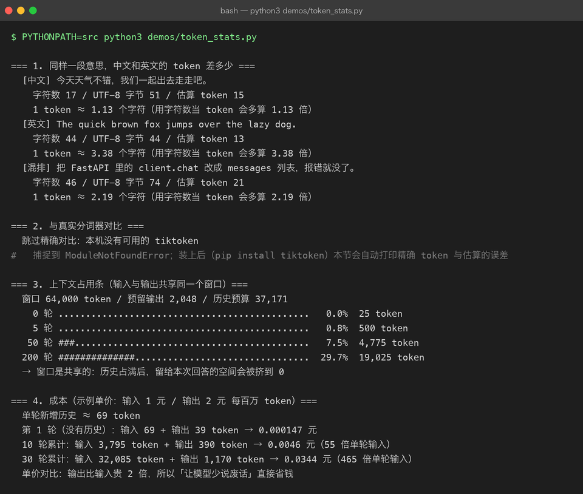
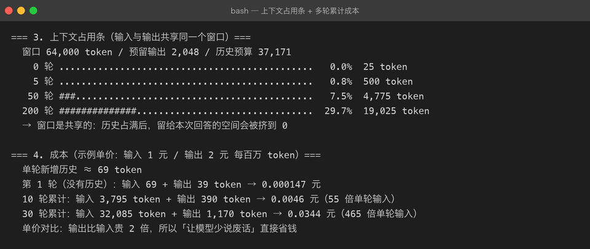

Project 03 — Chapter 07：Token / Context Window【词元与上下文窗口】
状态：✅ 已校对 对应代码：
src/assistant/tokens.py
1. 项目要增加什么能力
前面几章一直在提 token，这一章把它算清楚：
# 现在的做法：完全不知道花了多少
await client.chat(messages)本章目标：
能在发请求前估算成本、知道上下文还剩多少、并在超出前优雅处理。
没有这个能力，AI 应用就是「凭感觉开车」——直到账单来了或者 API 报 400 才知道出了问题。
2. 为什么需要这个知识
三个绕不开的现实：
1. 计费按 token，不按字符、不按请求次数
2. 上下文窗口有上限，超了直接报错（不是"变慢"，是失败）
3. 多轮对话的成本是 O(n²)（Chapter 05 已算过）而且 token 计数对中文用户有个额外的坑：中文的「字数」和 token 数完全不是一回事，凭直觉估会差出好几倍。
3. 核心概念
3.1 token 是什么
模型不读字符，读的是 token（子词单元）：
"unbelievable" → ["un", "believ", "able"] 3 个 token
"你好世界" → ["你", "好", "世", "界"] 或合并 通常 2~4 个 token所以：
英文：1 token ≈ 4 个字符 ≈ 0.75 个单词
中文：1 个汉字 ≈ 0.6 ~ 1.5 个 token（取决于分词与模型）结论：中文比英文更"费"token。 同一段意思，中文的 token 数通常是英文的 1.5 倍左右。
3.2 估算 vs 精确
精确计数需要模型对应的 tokenizer（如 OpenAI 的 tiktoken），各家不通用，而且 DeepSeek 等厂商有自己的分词。
工程上的做法：
def estimate_tokens(text: str) -> int:
"""粗估：够用来做预算控制，不要用来做计费。"""
chinese = sum(1 for ch in text if "\u4e00" <= ch <= "\u9fff")
other = len(text) - chinese
return int(chinese * 0.9 + other / 3.5) + 1两条铁律：
1. 估算用来做「裁剪决策」——够用
2. 计费要用响应里返回的 usage（prompt_tokens / completion_tokens）——那是准的3.3 响应里的 usage 才是真相
{
"choices": [...],
"usage": {
"prompt_tokens": 128,
"completion_tokens": 64,
"total_tokens": 192
}
}一定要把它记进日志（Project 02 的 JSON 日志已经这么做了）：
logger.info("LLM 调用完成", extra={"extra_fields": {
"prompt_tokens": usage["prompt_tokens"],
"completion_tokens": usage["completion_tokens"],
"latency_ms": int(cost * 1000),
}})3.4 上下文窗口是「输入 + 输出」共享的
这是最容易误解的一点：
上下文窗口 64K
= 本次输入的 prompt_tokens（含 system + 全部历史）
+ 本次要生成的 completion_tokens（预留）也就是说：历史占了 60K，你就只剩 4K 给回答。所以 max_tokens 也要算进预算，不能算完历史就觉得万事大吉。
3.5 成本怎么算
PRICE = {"deepseek-chat": {"in": 1.0, "out": 2.0}} # 元 / 百万 token（示例）
def cost_cny(model: str, p_in: int, p_out: int) -> float:
p = PRICE.get(model, {"in": 1.0, "out": 2.0})
return (p_in * p["in"] + p_out * p["out"]) / 1_000_000输出通常比输入贵（2~4 倍是常见区间），所以「让模型说废话」比「给模型看长文档」更贵——这解释了为什么 Prompt 里写「简洁回答」是省钱的正确姿势。
3.6 超出窗口怎么办
1. 预防：发送前估算，超预算就先裁剪（Chapter 05）
2. 兜底：捕获 API 的上下文超长错误，自动做一次激进裁剪后重试一次
3. 告知：仍然失败就明确告诉用户「对话太长了，建议开新会话」不要静默失败。 用户看到空回答但不知道为什么，是最差的体验。
4. 项目代码
src/assistant/
├── tokens.py # estimate_tokens() / budget 计算 / cost_cny()
├── memory.py # 用 estimate_tokens() 做裁剪决策
└── service.py # 发送前校验预算，记录 usage 到日志预算模型：
@dataclass(frozen=True)
class Budget:
context_window: int = 64_000 # 模型总窗口
reserved_output: int = 2_048 # 预留给回答
history_ratio: float = 0.6 # 历史最多占窗口的比例
@property
def history_budget(self) -> int:
return int((self.context_window - self.reserved_output) * self.history_ratio)

5. Java ↔ Python 对比
| Java | Python | 说明 |
|---|---|---|
String.getBytes(UTF_8).length | len(text.encode("utf-8")) | 都是「字节数」，都不是 token |
ByteBuffer 容量限制 | 上下文窗口 | 都是有界缓冲区 |
Arrays.copyOfRange 截断 | trim_to_budget() | 同 |
JVM -Xmx | context_window | 都是硬上限，超了就 OOM/报错 |
连接池 maxActive | history_budget | 都是主动限流 |
| Micrometer 埋点 | usage 记日志 | 都是可观测性 |
一个准确的心智模型：
上下文窗口 ≈ JVM 堆上限。 你可以主动控制用多少（裁剪），但超了就是硬失败（OOM / 400 错误），没有商量余地。
6. 常见坑
坑 1：用 len(text) 当 token 数
len("你好世界") # 4 个字符
真实 token # 可能是 3~6 个中文场景下这个误差会让「裁剪」要么裁太狠（丢上下文），要么裁不够（还是超窗口）。
坑 2：忘了 system 和历史也算钱
只盯着用户输入的长度，忽略了 system prompt + 全部历史。长对话里，用户输入可能只占总 token 的 5%。
坑 3：以为上下文窗口只管输入
见 3.4：输出也占同一个窗口。
坑 4：把估算值当计费依据
估算只用于决策。真实计费与对账，一律用响应里的 usage。
坑 5：静默截断
超长时如果自己悄悄裁掉一半历史，用户会发现「模型突然忘了前面的约定」，却没有任何提示。
正确做法：裁剪时打 WARNING 日志，并在必要时告诉用户。
坑 6：忽略多轮成本的平方增长
30 轮对话的成本≈单轮的 465 倍。不加预算控制的长对话应用，账单会很难看。
7. 实战挑战
挑战 1：实现 estimate_tokens()，对一段中英混排文本给出估算值，并与响应里的 usage.prompt_tokens 对比，看误差有多大。
挑战 2：实现 Budget，并在发送前校验：超出 history_budget 时先裁剪再发，超出窗口时抛出明确错误。
挑战 3（进阶）：实现累计成本统计——一次会话结束打印「总 token 数 / 估算费用」，并在 CLI 里用 --cost 开关打开。
8. 主动回忆
- token 和字符的关系？中文和英文有什么差异？
- 估算 token 和精确 token 分别用在什么场合？
- 上下文窗口是「输入独占」还是「输入输出共享」？
- 为什么输出通常比输入贵？这对 Prompt 写法有什么启示？
- 超出上下文窗口时，正确的处理流程是什么？
- 为什么不能静默裁剪历史？
9. 本节完成标准
- [ ] 有
estimate_tokens()，中英混排估算合理 - [ ] 每次调用记录
prompt_tokens/completion_tokens到日志 - [ ] 有
Budget模型，发送前校验并在超预算时先裁剪 - [ ] 超窗口时有明确的用户可见错误，不是静默失败
- [ ] 能给出一次会话的累计 token 与估算费用
上一章：06-model-parameters.md 下一章：08-function-calling.md —— 让模型能调用你的代码。